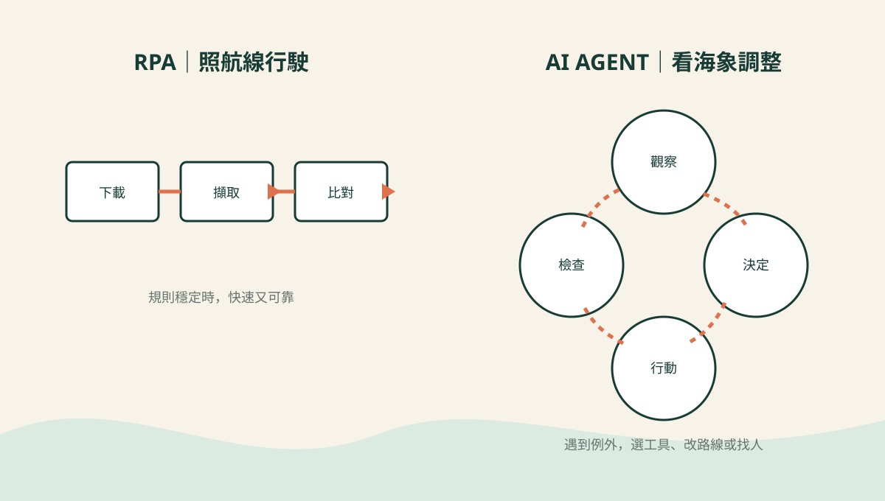

AI × AUDIT · DAY 05
What Is an AI Agent—and How Is It Different from RPA?
RPA follows a charted route. An AI agent reads the weather, chooses a tool, and adjusts course. Sensible captains still keep a human at the helm.

A practical case: screening for greenwashing
Suppose an auditor must compare an annual report, sustainability report, ESG website, and investor presentation. The question is simple: does the same ESG metric tell the same story everywhere?
The files are not simple. Labels change, pages move, tables become images, and boundaries hide in footnotes. That is where the difference between automation and agency becomes useful.
RPA: reliable hands on a fixed route
Robotic Process Automation executes explicit, repeatable rules. If the screen, file name, and workflow stay stable, it is fast and predictable.
for company in companies:
open_portal(company)
download("annual-report.pdf")
download("sustainability-report.pdf")
save_to(company.folder)If the website changes the button label, however, the robot may stare at the new sign like a sailor insisting the old pier is still there.
AI agent: goal, tools, feedback loop
An agent receives a goal, observes the situation, selects tools, evaluates results, and decides what to do next.
goal = "Find material ESG disclosure inconsistencies"
while not enough_evidence:
documents = search_public_sources()
metrics = extract_metrics(documents)
differences = compare(metrics)
evidence = validate_boundaries(differences)
return draft_findings(evidence)The code is conceptual, but the loop matters: observe → reason → act → check. The agent can adapt when a metric uses a new label or when a footnote changes the interpretation.
RPA and AI agents at a glance
| Question | RPA | AI agent |
|---|---|---|
| How does it work? | Follows predefined steps | Pursues a goal through a decision loop |
| Best input | Stable, structured data | Mixed and partly unstructured data |
| When something changes | Often stops or misfires | May adapt within permitted boundaries |
| Main risk | Silent process failure | Confident but unsupported judgment |
| Audit control | Rule and exception logs | Evidence, tool, prompt, and approval logs |
The strongest crew is usually hybrid
Use RPA for deterministic chores: downloading files, renaming them, moving data, and triggering scheduled jobs. Use an agent for interpreting documents, matching similar indicators, explaining possible differences, and preparing questions.
Then place a human review gate before any conclusion or publication. Autonomy without boundaries is not innovation; it is a loose cannon.
What an auditor should log
- The goal and scope given to the agent
- Documents, tools, and model versions used
- Evidence behind each proposed finding
- Exceptions, retries, and discarded paths
- The human approver and final decision
Three questions before launch
- Is the route stable? If yes, RPA may be enough.
- Does the work require interpretation? If yes, an agent may help.
- Can every important result be traced to evidence? If no, do not let it sail alone.
RPA automates the steps. An AI agent helps navigate the objective. Audit governance decides how far it may sail.